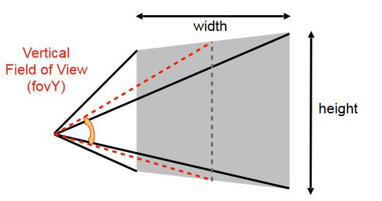
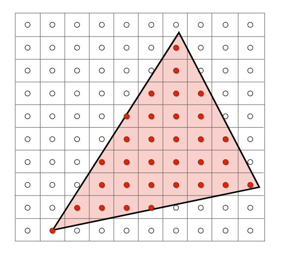
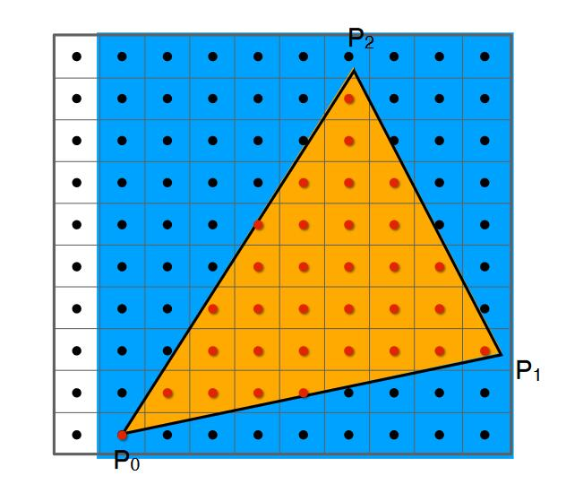
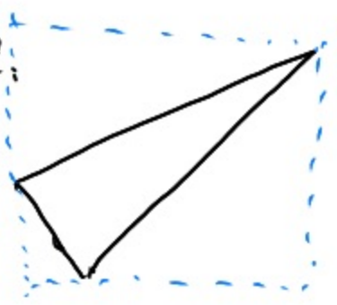
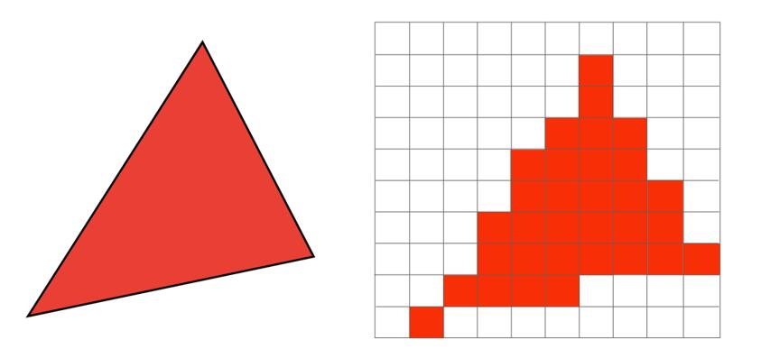

当观测结束后，所有物体到了[-1, 1]的三次方这个立方体中，那么，下一步是什么？将其放在屏幕上。
什么是光栅化
🔎
pixel：像素，picture element，一个小方块，且方块内颜色不变 Raster:屏幕，由像素组成二维数组
Rasterize: 光栅化
Triangle Mesh: 三角形面片
光栅化，即把对象（object）画在屏幕（raster）上。对象是指cubic中的内容，常用用三角形面片表示对象的表面。屏幕，由像素（pixel）组成的2D数组。数组的大小代码的屏幕的分辨率。
具体过程可以描述为：找到对象表面在cubic中的位置，根据cubic与raster的关系，确定它在raster上应出现的位置。在raster的正确的位置上渲染对象。
将观测的物体在屏幕上显示，就是光栅化。
定义一些符号
- 描述立方体的符号：l，r，u，d，f，n
- l = -r = 1
- b = -t = 1
- f = -n = 1, 物体在z轴负方向，因此n < 0
- 描述屏幕的符号：

- 宽高比（Aspect ratio）
- width/height
- 视角（Field of view）

- 用符号描述屏幕和立方体的关系
把视角和宽高比转换为l、r、b、t

由图可得以下关系：
\[ \tan \frac{fovY}{2}=\frac{t}{|n|} \]
\[ aspect=\frac{r}{t} \]
📌补充： 定义一个视锥，只需要视角和宽高比即可，其他参数可以转换。
光栅化的最基本的流程
Step 1: 选取cubic中物体的表面三角形
3D空间中的物体，通常使用三角形面片来描述物体的表面。所谓把物体画到屏幕上，实际上就是把这些三角形面片画到屏幕上。
为什么用三角形描述物体表面？
-
三角形是最基本的多边形（其他多边形可以由三角形拼成）
-
一个三角形一定在一个平面上
-
三角形关于“内”、“外”的定义是明确的
-
给定三角形三个顶点的属性，其内部任意点的属性可以通过插值得出
Step 2: 根据三角形在cubic内的坐标计算出它在屏幕上的位置（浮点数）
坐标系的变换，只需要计算出正确的变换矩阵就可以实现。

\[ \begin{bmatrix} x' \\ y' \\ 1 \\ 1 \\ \end{bmatrix} = \begin{bmatrix} S & T \\ 0 & 1 \\ \end{bmatrix}\begin{bmatrix} x \\ y \\ z \\ 1 \end{bmatrix} \]
其中S是指缩放，T是指平移，这里面不涉及到旋转。
对变换做以下假设：
- 忽略Z轴
- 将xy平面：[-1,1]^2 转换到 [0, width] X [0, height]
- 不涉及旋转
选取部分特殊点，代入计算，即可得出变换矩阵为：
\[ M_{viewport}=\left( \begin{matrix} \frac{width}{2}& 0& 0& \frac{width}{2}\\ 0& \frac{height}{2}& 0& \frac{height}{2}\\ 0& 0& 1& 0\\ 0& 0& 0& 1\\ \end{matrix} \right) \]
Step 3: 把三角形画在屏幕上
根据上面的转换公式，可以得出三角形上每个点对应在屏幕上的位置（浮点数）。但屏幕上像素的下标是整数。如下图：

怎么确定每个像素格子是否需要被渲染成三角形的颜色？
最简单的方法是：判断屏幕空间中每个像素的中心是否在三角形的内部。

屏幕空间
在屏幕上的坐标系

- 每个像素的坐标是整数，范围为[0, width) [0, height)
- 像素(x， y)的中心位置：(x+0.5, y+0.5)
❗注意区分坐标与位置的不同含义
方法一：采样方法
依次遍历每个像素(x, y)：
取像素中心的位置(x+0.5, y+0.5)
判断像素中心是否在三角形内部（叉乘）
如果在内：
渲染
如果在外：
渲染
如果在三角形边上：
自己决定是否渲染
🔎判断三角形的内和外：
https://caterpillarstudygroup.github.io/GAMES101_mdbook/Dependency/Vector.html#%E5%9C%A8%E5%9B%BE%E5%BD%A2%E5%AD%A6%E4%B8%AD%E7%9A%84%E4%BD%9C%E7%94%
缺点：必须要依次check每个pixel
方法二：Bounding Box [56:00]
对整个屏幕遍历，然后判断每个像素的中心是否在三角形内，这太傻了。
正确的做法是，只遍历包围三角形的最小矩阵，称之为三角形的包围盒。

局限性：
对于这种情况仍有较大的计算量。

方法三：Incremental [56:55]
一种启发式的方法，比较容易想到，也懒得记了。
📌课程中关于显示器的部分被我跳过了，因为我认为与算法相关度不大。
光栅化的结果
[1:02:38], [1:03:01]

本文出自CaterpillarStudyGroup，转载请注明出处。
https://caterpillarstudygroup.github.io/GAMES101_mdbook/